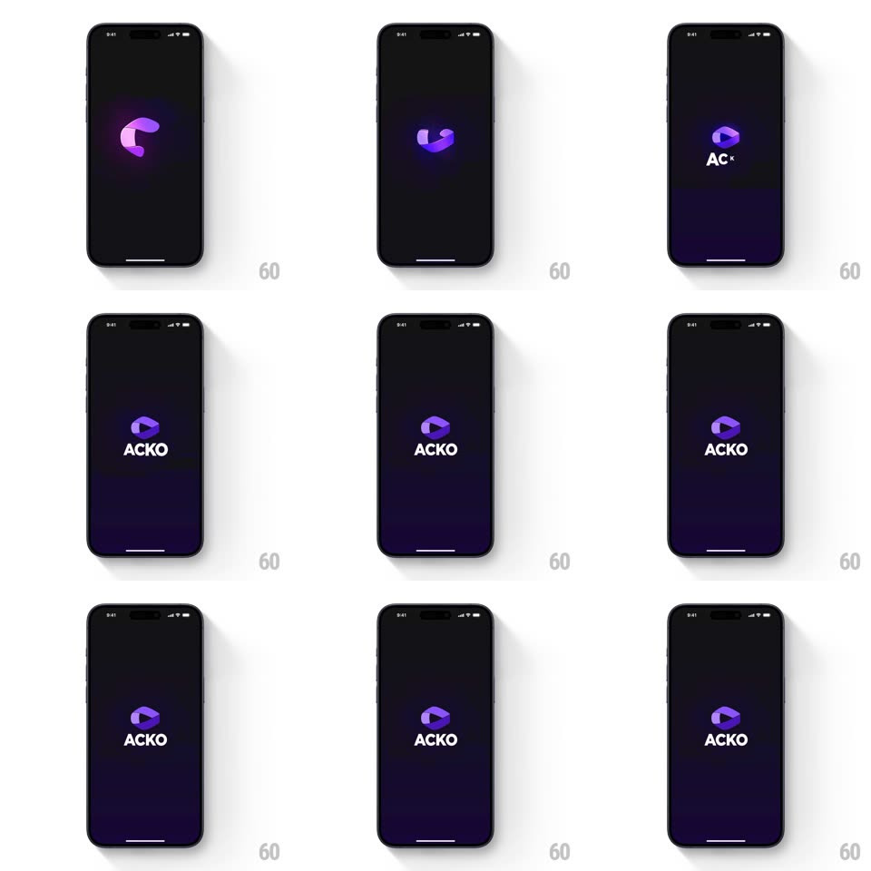

Media
Frame-by-frame

Rebuild this animation 1:1: ACKO's splash - a glowing purple 3D logo chunk scales in with a spring and locks into the hexagonal mark as "ACKO" spells out beneath it.

Rebuild this animation 1:1: ACKO's splash - a glowing purple 3D logo chunk scales in with a spring and locks into the hexagonal mark as "ACKO" spells out beneath it. ## Integration Integration: stack-agnostic spec - springs given as stiffness/damping, timed motions as duration + curve; map every value to your framework and animation library of choice. ## Scene Near-black screen. Center stage: the purple ACKO mark (a rounded 3D chunk with a cut edge) over a soft violet glow, the "ACKO" wordmark below. ## Motion spec Pattern: springy logo assemble, ~1.1s. - Entrance: the chunk scales from 0.4 with a spring (~300/16, one clear overshoot, 500ms) while its violet glow blooms in behind it (blur 30px, opacity 0 -> 60%, 400ms). - Assemble: the chunk rotates slightly (~15deg) and snaps square as it lands (200ms), the glow settling to 40%. - Wordmark: "ACKO" reveals letter by letter left to right (70ms stagger, each letter fading up 6px, 250ms). - Hold: the glow breathes once (1s, +-10% opacity) before the app transitions on. ## Calibration - The logo is dimensional - a lit face and a darker side face, not a flat icon. - The overshoot is visible but single - no repeated bouncing. ## Reduced motion Logo and wordmark fade in together (300ms). ## Don't miss - The glow is part of the logo's arrival - it scales with the chunk, not the screen. - The wordmark types out only after the mark has fully landed.